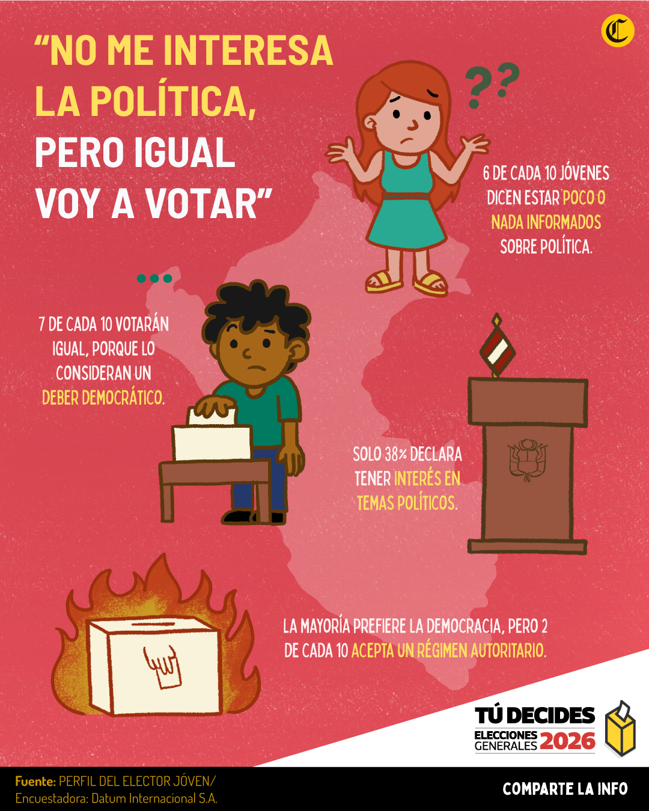
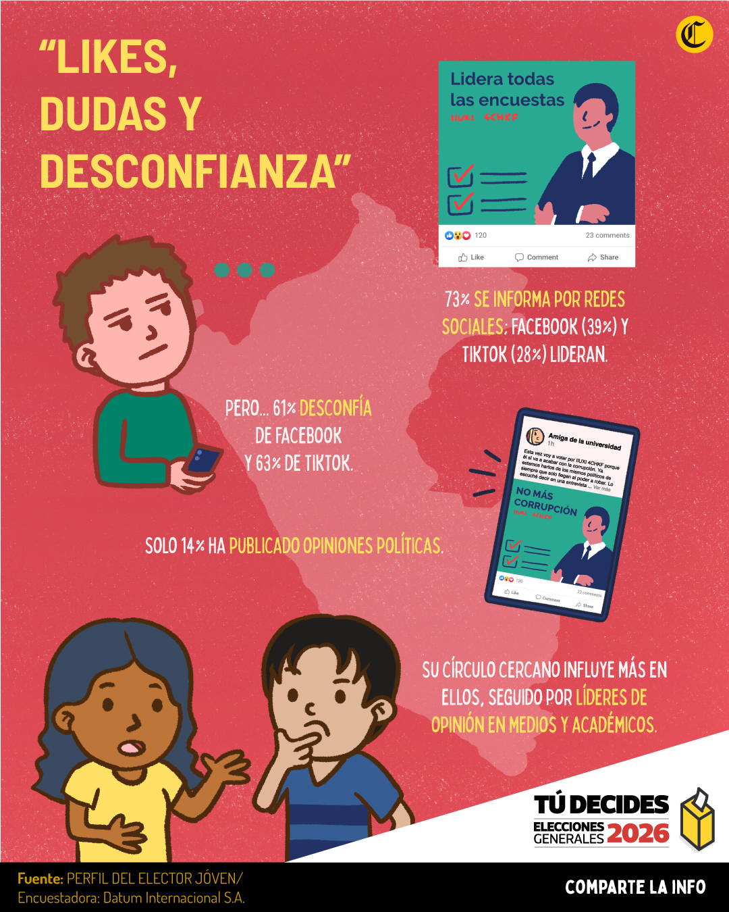
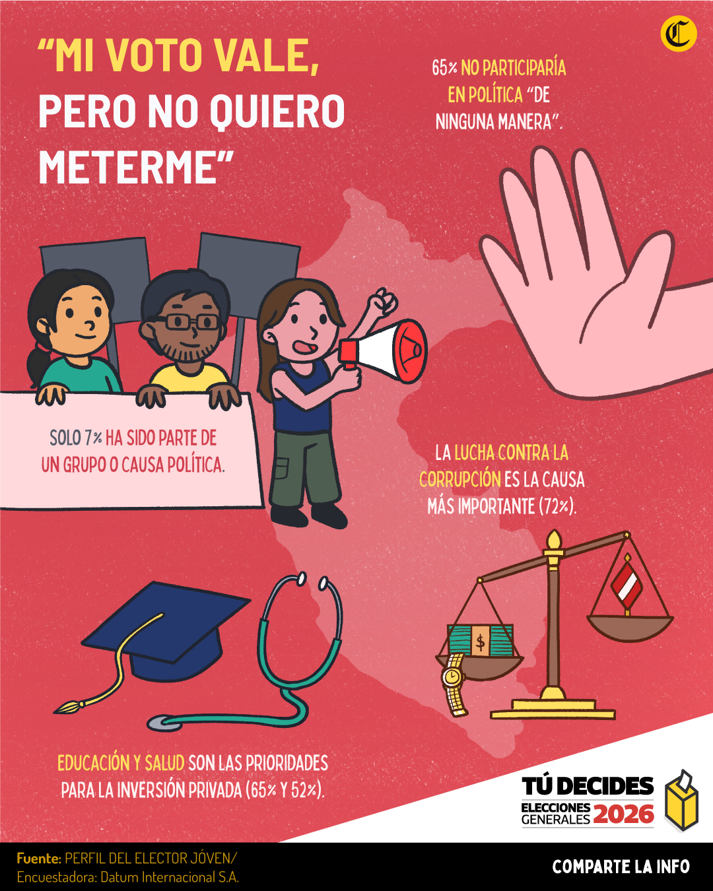
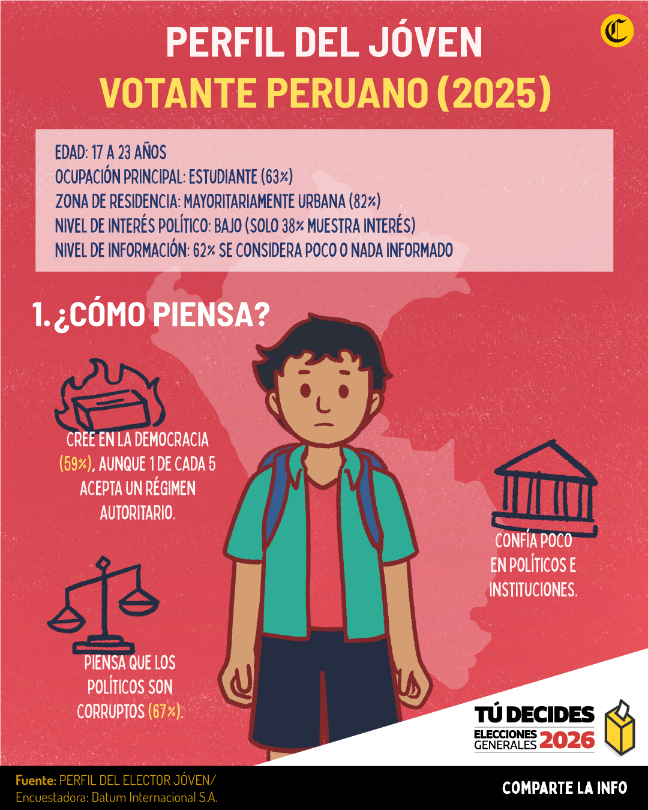
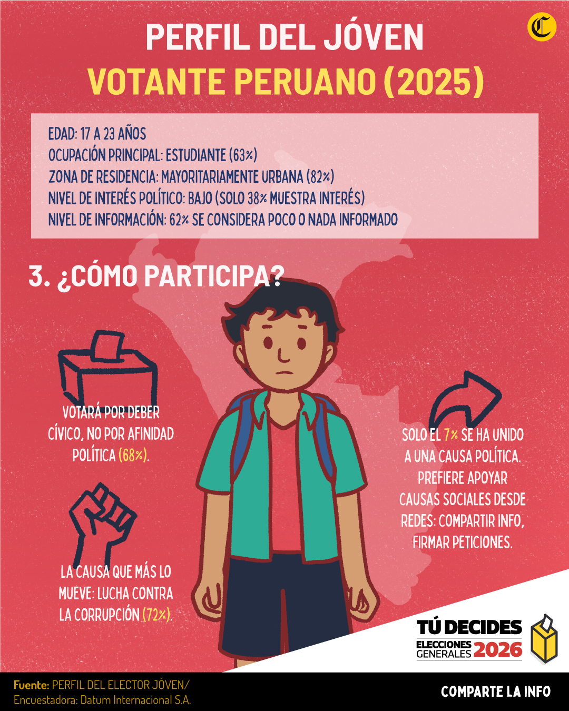

Los jóvenes a las urnas:
el perfil del nuevo elector del 2026
Una radiografía al voto juvenil que participará en la próxima contienda electoral. Su interés en política, sus expectativas, su posición ideológica. Más de 2,5 millones ejercerán su derecho cívico por primera vez.
perfil del joven
Las próximas Elecciones Generales 2026 movilizará a las urnas a una población electoral de más de 27 millones de peruanos. De ellos, más de 2,5 millones corresponde nuevos votantes; es decir, jóvenes que alcanzarán la mayoría de edad de cara a la contienda del 12 de abril próximo y están llamados a votar por primera vez. Ante ello, un estudio de Datum Internacional para El Comercio analiza el perfil del elector joven, su interés en la política, sus formas de seguir el acontecer nacional, su inclinación en el espectro ideológico, entre otros. ¿Cómo llega esta nueva generación a las urnas?
Interés en política, nivel de información y posición
En promedio, seis de cada 10 jóvenes está nada o poco interesado en la política. Hay en general una desconexión con los asuntos políticos. Solo 38% afirma estar muy o algo interesado. En tanto, a nivel del espectro ideológico, más de la mitad (55%) reconoce tener una inclinación política de centro. Y las redes sociales son las más utilizadas para informarse, pero al mismo tiempo concentran la mayor desconfianza. Los medios de comunicación tradicionales mantienen una confianza más alta.
Se identifica un bajo nivel de interés en la política nacional, estando las mujeres más alejadas del ámbito político.
6 de cada 10 se considera poco o nada informado, siendo este desconocimiento también más marcado en mujeres y en algunas regiones específicas como el norte y el sur. En general, se revela un contexto generalizado de desconexión o falta de claridad respecto a los asuntos políticos del país.
Las redes sociales se consolidan como principal fuente informativa sobre noticias y realidad nacional, siendo utilizadas por el 73%, superando ampliamente a medios tradicionales como televisión (50%) y radio (9%).
Confianza en los medios de comunicación tradicionales como radio, televisión y diarios impresos, sigue siendo relativamente alta. Mientras que las plataformas digitales, especialmente las redes sociales, lideran en desconfianza: WhatsApp (70%), TikTok (63%), Facebook (61%) y X/Twitter (24%).
infodraws informativos




